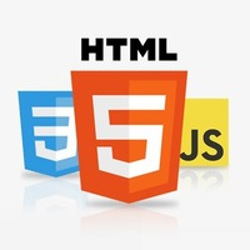

My Skills:
I mostly Worked with:
-
Angular
My favorite framework.
-

HTML/CSS/JavaScript
Practiced with every project.
-
Node/Express
Finished FreeCodeCamp Back End Certificate.
- Git/GitHub
I'm also familiar with:
- React&Redux - Used in two remote team projects.
- MongoDB - With Moongoose.
- ES6
- Bootstrap